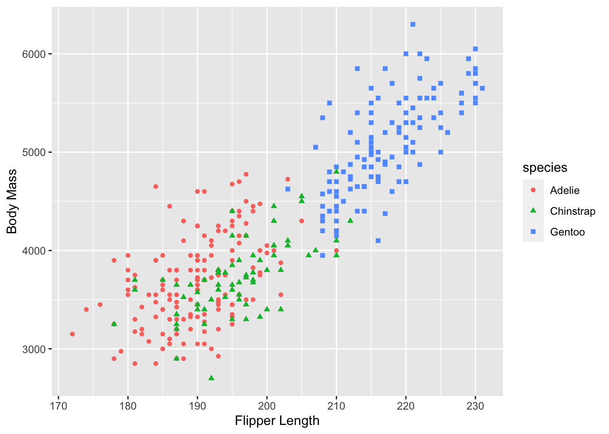
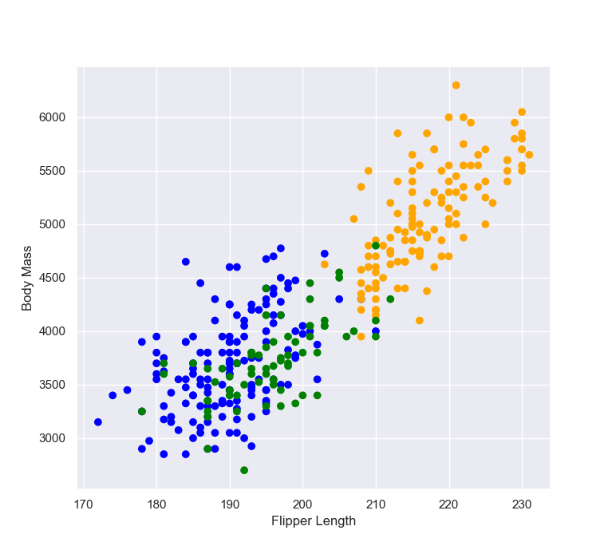
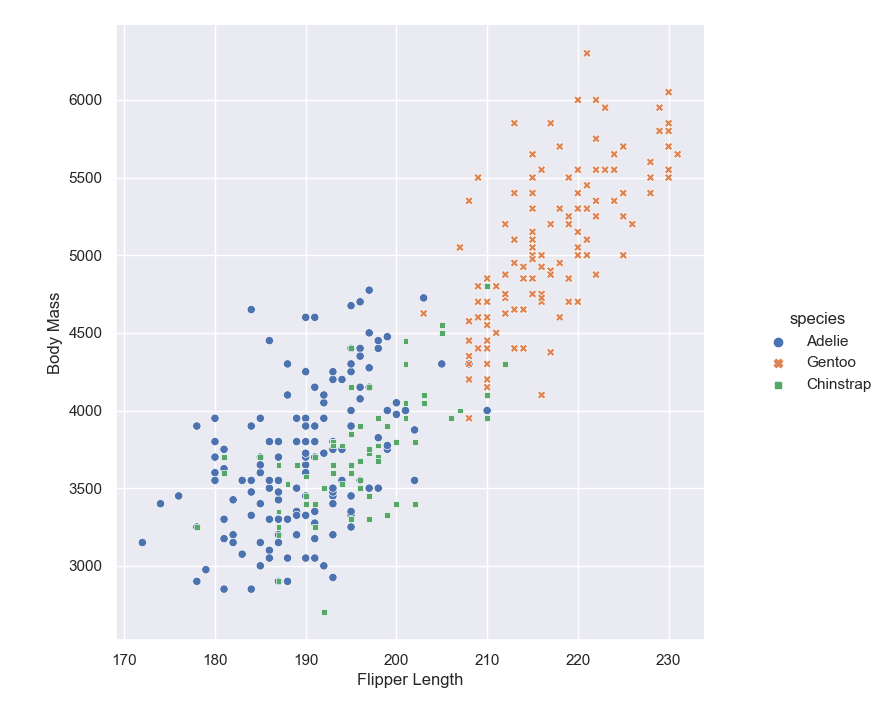

Chapter 9 Visualize
9.1 Data
The Palmer penguins dataset was introduced by Allison Horst, Alison Hill, and Kristen Gorman provide a great dataset for data exploration and visualization, as an alternative to iris. It was first introduced as an R package. The released version of palmerpenguins can be instaalled from CRAN with:
R Installation
install.packages("palmerpenguins")
Using palmerpenguins python package you can easily load the Palmer penguins into your python environment.
Python Installation
pip install palmerpenguins
The palmerpenguins package contains two datasets : penguins and penguins_raw. penguins is a simplified version of the penguins_raw data.
9.2 R
9.2.1 base R package
# Load Palmer Archipelago (Antarctica) Penguin Data
library(palmerpenguins)
# Return the first part of the dataset
head(penguins)## # A tibble: 6 x 8
## species island bill_length_mm bill_depth_mm flipper_length_… body_mass_g sex
## <fct> <fct> <dbl> <dbl> <int> <int> <fct>
## 1 Adelie Torge… 39.1 18.7 181 3750 male
## 2 Adelie Torge… 39.5 17.4 186 3800 fema…
## 3 Adelie Torge… 40.3 18 195 3250 fema…
## 4 Adelie Torge… NA NA NA NA <NA>
## 5 Adelie Torge… 36.7 19.3 193 3450 fema…
## 6 Adelie Torge… 39.3 20.6 190 3650 male
## # … with 1 more variable: year <int>## [1] "species" "island" "bill_length_mm"
## [4] "bill_depth_mm" "flipper_length_mm" "body_mass_g"
## [7] "sex" "year"# Define color for each of the 3 iris species
colors <- c("#00AFBB", "#E7B800", "#FC4E07")
colors <- colors[as.numeric(penguins$species)]
# Define shapes
shapes = c(16, 17, 18)
shapes <- shapes[as.numeric(penguins$species)]
plot(x = penguins$flipper_length_mm,
y = penguins$body_mass_g,
col = colors,
pch = shapes,
xlab = "Flipper Length",
ylab = "Body Mass" )
9.2.2 gggplot2 Package
ggplot2 is an R package dedicated to data visualization which is based on The Grammar of Graphics (Wilkinson 2012).
#load ggplot2 package to make statistical graphics
library(ggplot2)
library(palmerpenguins)
p <- ggplot(penguins) +
geom_point( aes(x = flipper_length_mm,
y = body_mass_g,
color = species,
shape = species)) +
xlab("Flipper Length")+
ylab("Body Mass")
print(p)
9.3 Python
9.3.1 Matplotlib package
Matplotlib is mainly deployed for basic plotting. Visualization using Matplotlib generally consists of bars, pies, lines, scatter plots and so on.
#load functions in palmerpenguins package
from palmerpenguins import load_penguins
penguins = load_penguins()
# Return the first part of the dataset
penguins.head()
# Retrieve column names
list(penguins.columns)
# Import matplotlib to make statistical graphics.
# By convention, it is imported with the shorthand sns.
import matplotlib.pyplot as plt
colors = {'Adelie':'blue', 'Gentoo':'orange', 'Chinstrap':'green'}
plt.scatter(penguins.flipper_length_mm, penguins.body_mass_g, c= penguins.species.apply(lambda x: colors[x]))
plt.xlabel('Flipper Length')
plt.ylabel('Body Mass')
9.3.2 seaborn Package
Seaborn provides a variety of visualization patterns. It uses fewer syntax and has easily interesting default themes.
# Import seaborn to make statistical graphics.
# By convention, it is imported with the shorthand sns.
import seaborn as sns
#load functions in palmerpenguins package
from palmerpenguins import load_penguins
penguins = load_penguins()
# Apply the default theme
sns.set_theme()
# sns.set_style('whitegrid')
p = sns.relplot(x = 'flipper_length_mm',
y ='body_mass_g',
hue = 'species',
style = 'species',
data = penguins)
p.set_xlabels('Flipper Length')
p.set_ylabels('Body Mass') 
The function relplot() is named that way because it is designed to visualize many different statistical relationships. The relplot() function has a convenient kind parameter that lets you easily switch to this alternate representation:
scatterplot() with kind="scatter"; the default and lineplot() with kind="line".
9.3.3 plotnine package
https://pypi.org/project/plotnine/
plotnine is an implementation of a grammar of graphics in Python, it is based on ggplot2. The grammar allows users to compose plots by explicitly mapping data to the visual objects that make up the plot.
Plotting with a grammar is powerful, it makes custom (and otherwise complex) plots are easy to think about and then create, while the simple plots remain simple.
References
Wilkinson, Leland. 2012. “The Grammar of Graphics.” In Handbook of Computational Statistics, 375–414. Springer.